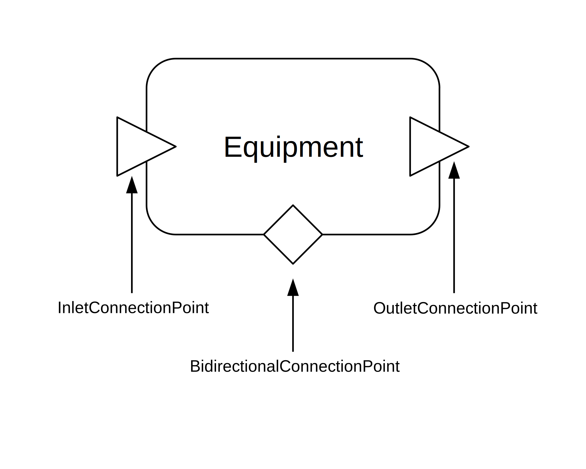
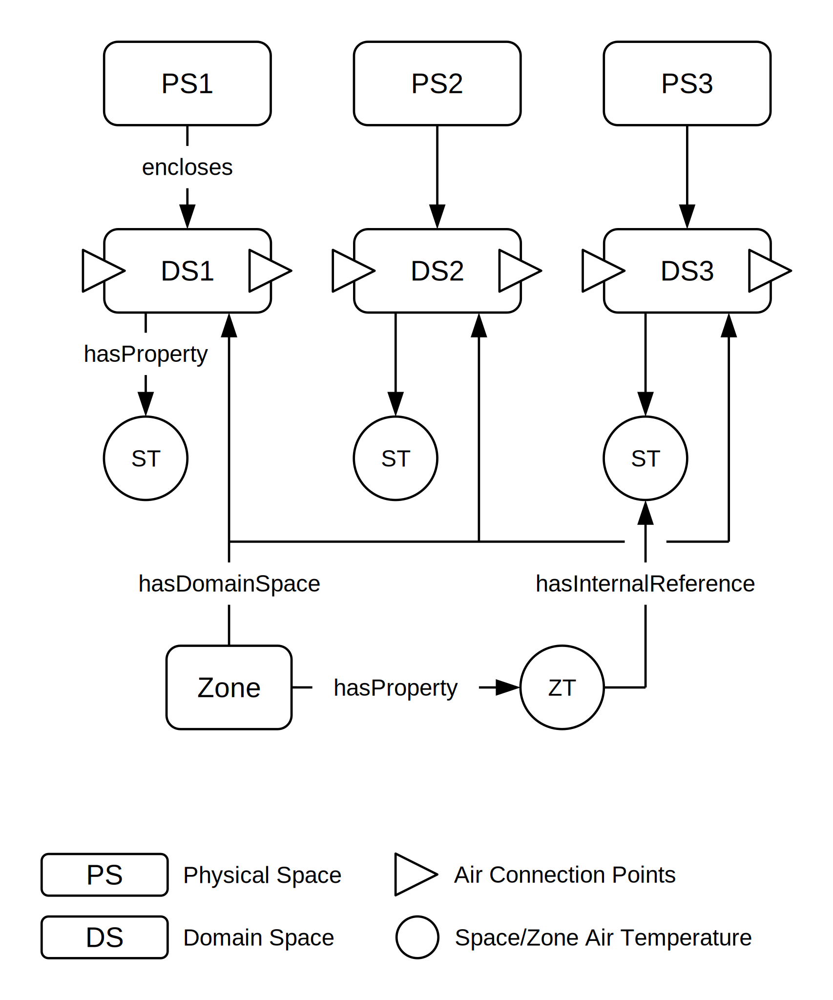

32. Glossary (ASHRAE 223P terms)¶
This glossary is generated from the ASHRAE 223P RDF (core.ttl, equipment.ttl). Links point to explore.open223.info for the canonical term page.
32.1. Classes¶
32.1.1. Equipment (s223:Equipment)¶
Equipment is the modeling construct used to represent a thing designed to accomplish a specific task, or a complex thing
that contains component pieces of Equipment that are connected to each other and work together to accomplish a task. Equipment can have
Connections and ConnectionPoints through which one or more kinds of medium (see {s223:Substance-Medium}) might flow. Examples of possible Equipment include a Pump,
Fan, AirHeatExchanger, Luminaire, and Sensor, as well as more complex things like a heat pump, a chilled water plant, or a utility meter.
Equipment is distinct from a System, which is simply a logical grouping or collection of (only) Equipment.
In common usage, terms like equipment and system have a variety of ambiguous and possibly conflicting interpretations. A semantic model is
an attempt to eliminate such ambiguities and conflicts. If the thing being modeled involves Connections and ConnectionPoints, it must be modeled as
Equipment and not a System. Thus, a model of a chilled water plant that includes external connections to things beyond the plant must
be modeled as Equipment. Any contained Equipment within the chilled water plant (i.e., the pumps, valves, filters, and other things) may alternatively or in
addition be logically grouped and modeled as a System.
The graphical depiction of Equipment used in this document is a round-cornered
rectangle as shown in Figure 5-1.
32.1.2. System (s223:System)¶
A logical grouping of one or more Equipment or other Systems for some functional purpose.
32.1.3. Physical Space (s223:PhysicalSpace)¶
A PhysicalSpace is an architectural concept representing a room, a part of a room, a collection of rooms, or any other physical region in a building. PhysicalSpaces may be grouped to define larger PhysicalSpaces using the relation contains (see {s223:contains}).
32.1.4. Domain Space (s223:DomainSpace)¶
A DomainSpace represents some portion of a PhysicalSpace that is affected by a building service associated with a domain. DomainSpaces may represent an entire PhysicalSpace or any portion of a PhysicalSpace (see {s223:PhysicalSpace}). Multiple DomainSpaces of the same domain may overlap, and DomainSpaces of different domains may also overlap. DomainSpaces may be grouped into Zones using the relation hasDomainSpace (see {s223:hasDomainSpace}).
32.1.5. Zone (s223:Zone)¶
A logical grouping of one or more DomainSpaces for a specific domain for some building service or control-related purpose. Zones may be grouped into ZoneGroups (see {s223:ZoneGroup}).
32.1.6. Connectable (s223:Connectable)¶
Connectable is an abstract class representing a thing such as, Equipment (see {s223:Equipment}), DomainSpace (see {s223:DomainSpace}), or Junction (see {s223:Junction}) that can be connected via connection points and connections.
32.1.7. Connection (s223:Connection)¶
A Connection is the modeling construct used to represent the thing (e.g., pipe, duct, conductor, or free space) that is used to convey
some Medium (e.g., water, air, electricity, light, wi-fi) between two connectable things. All connections have two or more connection points bound
to either Equipment (see {s223:Equipment}), DomainSpace (see {s223:DomainSpace}), or Junction (see {s223:Junction}). See Figure 6-2. If the direction
of flow is constrained, that constraint is indicated by using one or more InletConnectionPoints (see {s223:InletConnectionPoint}) to represent the
inflow points and OutletConnectionPoints (see {s223:OutletConnectionPoint}) to represent the outflow points.
A Connection may contain branches or intersections. These may be modeled using Junctions if it is necessary to identify a specific intersection.
(see {s223:Junction}).
The constraint to maintain compatible mediums among a Connection and all of its associated ConnectionPoints gives rise to multiple
validation test cases, where the specified medium might be a pure medium, or a mixture with constituents. See {s223:Substance-Medium} for
more details.

32.1.8. Junction (s223:Junction)¶
A Junction is a modeling construct used when a branching point within a Connection (see {s223:Connection}) is of significance,
such as specifying the observation location of a Sensor, or when a modeler wants to expose a branch point within a containing piece of Equipment.
When a Junction is used, what might have been modeled as a single, branched Connection
is separated into three or more separate connections, all tied together with the Junction and its associated connection points.
Junction is a subClassOf Connectable, which gives it the ability to have connection points, but unlike Equipment (and like Connection)
it is not allowed to change the Medium that passes through it. This is why Junction is a sibling class to Equipment and not a subclass.
This constraint to maintain compatible mediums among a Junction and all of its associated ConnectionPoints gives rise to multiple
validation test cases, where the specified medium might be a pure medium, or a mixture with constituents. See {s223:Substance-Medium} for
more details.
32.1.9. ConnectionPoint (s223:ConnectionPoint)¶
A ConnectionPoint is an abstract modeling construct used to represent the fact that one connectable thing can be connected to another connectable thing using a Connection. It is the abstract representation of the flange, wire terminal, or other physical feature where a connection is made. Equipment, DomainSpaces and Junctions can have one or more ConnectionPoints (see {s223:Connectable}).
A ConnectionPoint is constrained to relate to a specific medium such as air, water, or electricity which determines what other things can be connected to it. For example, constraining a ConnectionPoint to be for air means it cannot be used for an electrical connection.
A ConnectionPoint belongs to exactly one connectable thing (see {s223:Connectable}).
ConnectionPoints are represented graphically in this standard by a triangle with the point indicating a direction of flow, or a diamond in the case of a bidirectional flow as shown in Figure 6-1.

32.1.10. Inlet Connection Point (s223:InletConnectionPoint)¶
An InletConnectionPoint is a ConnectionPoint for which a medium (Substance-Medium) is expected to flow into the associated Connectable.
32.1.11. Outlet Connection Point (s223:OutletConnectionPoint)¶
An OutletConnectionPoint is a ConnectionPoint for which a medium (Substance-Medium) is expected to flow out of the associated Connectable.
32.1.12. Bidirectional Connection Point (s223:BidirectionalConnectionPoint)¶
A BidirectionalConnectionPoint is a ConnectionPoint for which a medium (Substance-Medium) is expected to flow either into or out of the associated Connectable.
32.1.13. Property (s223:Property)¶
An attribute, quality, or characteristic of a feature of interest.
The Property class is the parent of all variations of a Property, which are:
ActuatableProperty - subclass of Property that can be modified by user or machine outside of the model (typically command);
ObservableProperty - subclass of Property that are observed (typically measures);
EnumerableProperty - subclass of Property defined by EnumerationKind;
QuantifiableProperty - subclass of Property defined by numerical values.
And their subclass combinations :
QuantifiableActuatableProperty,
QuantifiableObservableProperty,
EnumeratedObservableProperty,
EnumeratedActuatableProperty.
A QuantifiableProperty (or subClass thereof) shall always be associated with a Unit and a QuantityKind, either explicitly from the Property,
or through the associated Value. If the Unit is defined, the SHACL reasoner (if invoked) will figure out and assert a QuantityKind if it is
unambiguous.
Enumerable properties shall be associated with an EnumerationKind. Different flavors of properties are shown in Figure 11-1.

A Property instance that is not an instance of one of the subclasses is unconstrained with respect to its value.
32.1.14. Observable Property (s223:ObservableProperty)¶
The term “observable” implies that reading the ObservableProperty value will return the result of a physical observation, usually by a Sensor.
In contrast, the term “actuatable” (see {s223:ActuatableProperty}) implies that writing to the ActuatableProperty value will directly trigger a physical actuation.
32.1.15. Actuatable Property (s223:ActuatableProperty)¶
The term “actuatable” implies that writing to the ActuatableProperty value will directly trigger a physical actuation by either an Actuator or Equipment.
In contrast, the term “observable” (see {s223:ObservableProperty}) implies that reading the ObservableProperty value will return the result of a physical observation.
32.1.16. Quantifiable Property (s223:QuantifiableProperty)¶
This class is for quantifiable values that describe an object (System, Equipment, etc.) that are typically static (hasValue). That is, they are neither measured nor specified in the course of operations.
32.1.17. Quantifiable Observable Property (s223:QuantifiableObservableProperty)¶
This class is for instances of QuantifiableProperty for which numerical values are observed, like a temperature reading or a voltage measure.
32.1.18. Quantifiable Actuatable Property (s223:QuantifiableActuatableProperty)¶
This class is for instances of QuantifiableProperty for which numerical values are specified to be modifiable by a user or a machine outside of the model, like a setpoint.
32.1.19. Enumerable Property (s223:EnumerableProperty)¶
An EnumerableProperty is a Property with an enumerated (fixed) set of possible values.
32.1.20. ExternalReference (s223:ExternalReference)¶
ExternalReference is an abstract class that represents a thing that contains API or protocol parameter values necessary to associate a Property with a value.
32.1.21. BACnetExternalReference (s223:BACnetExternalReference)¶
An ExternalReference that contains BACnet protocol parameter values necessary to associate a Property with a value.
32.1.22. Function (s223:Function)¶
A Function is used to model transfer and/or transformation of information (i.e., Property). It has relations to input Properties and output Properties. The actual algorithms that perform the transformations are described in CDL and are out of scope of the 223 standard.
32.1.23. Sensor (s223:Sensor)¶
A Sensor observes an ObservableProperty (see {s223:ObservableProperty})
which may be quantifiable (see {s223:QuantifiableObservableProperty}), such as a
temperature, flow, or concentration, or enumerable (see {s223:EnumeratedObservableProperty}),
such as an occupancy state.
If a Sensor observes a QuantifiableObservableProperty relative to an assumed
or common reference point, it can be modeled with only an observation location.
For example:
@prefix : <http://example.com/> .
:example1 a s223:TemperatureSensor ;
s223:hasObservationLocation :location1 ;
qudt:hasQuantityKind qudtqk:Temperature .
If a Sensor observes a QuantifiableObservableProperty relative to a unique
or specified reference point, it can be modeled with an observation location and
a reference location, and indicating the difference between two values by setting isDeltaQuantity to true. For example:
@prefix : <http://example.com/> .
:example2 a s223:TemperatureSensor ;
s223:hasObservationLocation :location1 ;
s223:hasReferenceLocation :location2 ;
qudt:hasQuantityKind qudtqk:Temperature ;
qudt:isDeltaQuantity true .
32.2. Relations¶
32.2.1. contains (s223:contains)¶
A Relation that associates a piece of Equipment with its component pieces of Equipment, or a PhysicalSpace (see {s223:PhysicalSpace}) with its component PhysicalSpaces.
32.2.2. has member (s223:hasMember)¶
A Relation that associates a System with its component Equipment and/or Systems.
32.2.3. has connection point (s223:hasConnectionPoint)¶
One of two Relations that associates Connectable thing with a ConnectionPoint. It is the inverse of the relation isConnectionPointOf (see {s223:isConnectionPointOf}).
32.2.4. is connection point of (s223:isConnectionPointOf)¶
One of two Relations that associates a ConnectionPoint with a Connectable thing. It is the inverse of the relation hasConnectionPoint (see {s223:hasConnectionPoint}).
32.2.5. connected (s223:connected)¶
The relation connected indicates that two connectable things are connected without regard to the direction of flow.
32.2.6. connected to (s223:connectedTo)¶
The relation connectedTo indicates that connectable things are connected with a specific direction of flow. A is connectedTo B, means a direction of flow from A to B. The inverse direction is indicated by connectedFrom (see {s223:connectedFrom}).
32.2.7. connected from (s223:connectedFrom)¶
The relation connectedFrom indicates that connectable things are connected with a specific direction of flow. B is connectedFrom A, means that the direction of flow is from A to B. The inverse direction is indicated by connectedTo (see {s223:connectedTo}).
32.2.8. connects at (s223:connectsAt)¶
A Relation that associates a Connection with a specific ConnectionPoint.
32.2.9. connects through (s223:connectsThrough)¶
A Relation that associates a ConnectionPoint with a Connection, without regard to the direction of flow.
32.2.10. connects to (s223:connectsTo)¶
A Relation that associates a Connection with a Connectable thing, with an implied direction of flow. A connectsTo B indicates a flow from A to B.
32.2.11. connects from (s223:connectsFrom)¶
A Relation that associates a Connectable thing with a Connection, with an implied direction of flow. B connectsFrom A indicates a flow from A to B.
32.2.12. cnx (s223:cnx)¶
A Relation that associates adjacent entities in a connection path, comprised of Equipment-ConnectionPoint-Connection-ConnectionPoint-Equipment sequences.
32.2.13. has Boundary Connection Point (s223:hasBoundaryConnectionPoint)¶
The hasBoundaryConnectionPoint relation means the ConnectionPoint represents the boundary of a System (see {s223:System}) defined by the modeler, such as a model fragment provided by the vendor of a collection of equipment intended for integration with another model. The presence of this relation is used to indicate that such a “dangling connection point” should not generate a validation error in a non-integrated context but should generate an error in an integrated context.
32.2.14. has Optional Connection Point (s223:hasOptionalConnectionPoint)¶
The hasOptionalConnectionPoint relation means the ConnectionPoint represents the boundary of a System (see {s223:System}) defined by the modeler, such as a model fragment provided by the vendor of a collection of equipment intended for integration with another model. The presence of this relation is used to indicate that such a “dangling connection point” should not generate a validation error in an integrated or non-integrated context.
32.2.15. mapsTo (s223:mapsTo)¶
A Relation that associates a ConnectionPoint of a Connectable with a corresponding ConnectionPoint of the one containing it (see {pub:equipment-containment}). The associated ConnectionPoints shall have a compatible medium (see {s223:Substance-Medium}).
32.2.16. has Medium (s223:hasMedium)¶
The relation hasMedium is used to indicate what medium is flowing through the connection (e.g., air, water, electricity). The possible values are defined in Substance-Medium (see {s223:Substance-Medium}).
32.2.17. hasRole (s223:hasRole)¶
A Relation that associates a role with of a piece of Equipment, a Connection, ConnectionPoint, or System within a building (e.g., a heating coil might be associated with Role-Heating). Possible values are defined in EnumerationKind-Role (see {s223:EnumerationKind-Role}).
32.2.18. has observation location (s223:hasObservationLocation)¶
A Relation that associates a Sensor with the topological location where it is observing a Property (see {s223:observes}). The observation location shall be a Connectable (see {s223:Connectable}), Connection (see {s223:Connection}), or ConnectionPoint (see {s223:ConnectionPoint}).
32.2.19. has reference location (s223:hasReferenceLocation)¶
A Relation that associates a differential sensor with the topological location of the baseline (reference) Property (see {s223:observes}).
32.2.20. has internal reference (s223:hasInternalReference)¶
A Relation that associates a Property with another equivalent Property. For example, a Property that represents a Zone
temperature could have at most one hasInternalReference relation to another Property that is a temperature measurement from one room in the zone (see Figure 11-2).

Another use of hasInternalReference is to make a Property of a piece of equipment
visible as a Property of a piece of containing equipment (see {pub:equipment-containment}).
This is illustrated in Figure 11-3.

Note that the hasInternalReference relation is transitive.
32.2.21. has external reference (s223:hasExternalReference)¶
A Relation that associates a Property with an external telemetry source.
32.2.22. observes (s223:observes)¶
A Relation that associates a Sensor with one ObservableProperty (see {s223:ObservableProperty})
which is used by the sensor to generate a measurement value (e.g., a temperature) or a simple observation of a stimulus
causing a reaction (e.g., a current binary switch that closes a dry contact when a fan is powered on).
32.2.23. has Property (s223:hasProperty)¶
A Relation that associates a Concept with a Property.
32.2.24. has input (s223:hasInput)¶
A Relation that associates a Function (see {s223:Function}) with a Property (see {s223:Property}) that is used as input to the Function.
32.2.25. has output (s223:hasOutput)¶
A Relation that associates a Function (see {s223:Function}) with a Property (see {s223:Property}) that is calculated by the Function.